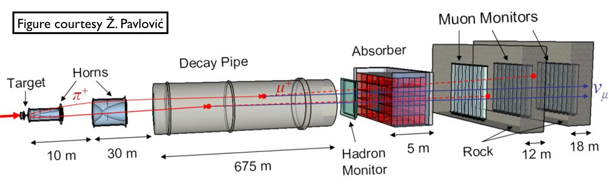
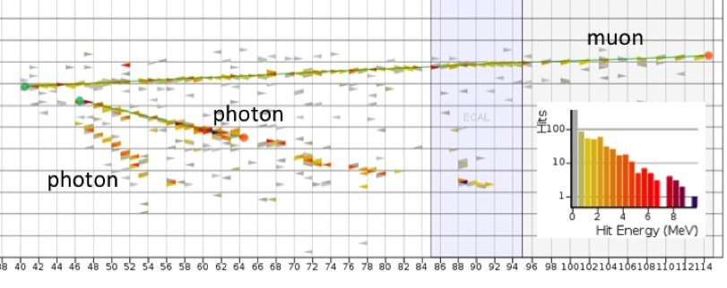
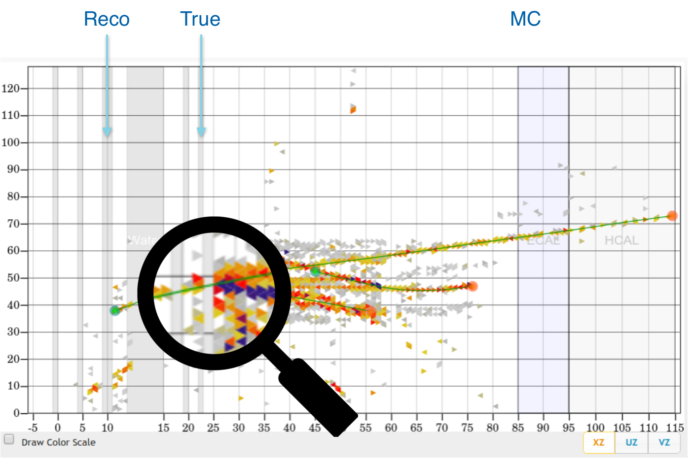
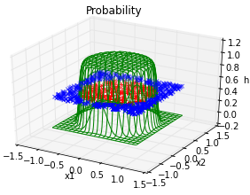

Machine Learning for MINERvA Physics Reconstruction
Tomasz Golan
IFT seminar, 10.03.2017
Outline
Motivation
(for MINERvA experiment)
Neutrino oscillations
- three neutrino flavors: electron, muon, tau
- created in one of the flavors can be detected with a different flavor later
- The Nobel Price in Physics 2015: Takaaki Kajita and Arthur B. McDonald (Super-K, SNO)
src: nobelprize.org
Oscillation experiment
MINERvA
Main INjector ExpeRiment \(\nu\)-A
MINERvA Experiment
- MINERvA is a neutrino-scattering experiment at Fermilab
- Collaboration of about 50-100 physicist
- NuMI beam is used to measure cross section for neutrino-nucleus interactions
- The detector includes several different nuclear targets

NuMI Beamline

Low vs Medium Energy
by changing distance between horns one can change energy spectrum
by changing horns polarization one can switch between neutrino and anti-neutrino mode

LE vs ME analyses
- LE analyses: almost done
- ME analyses: starting now
- more energy
- more particles in the final state
- more messy events
- more problems with the reconstruction

LE event example
MINERvA Detector

Nuclear targets

Event example 1

courtesy of G. Perdue
Event example 2

courtesy of G. Perdue
Vertex Reconstruction
tracking based algorithms fail for high energy events
"by eye" method is very often more accurate
idea: use algorithms for images analysis and pattern recognition

Machine Learning
Why ML?
ImageNet is an image database
- Annual competition for classification
- 2010: 71.8%
- 2011: 74.3%
- 2012: 84.0%
- 2013: 88.2%
- 2014: 93.3%
- 2015: 96.4%
- Humans: about 95%
- Why humans fail?

Siberian Husky or Alaskan Malamute?
Understanding CNN
If you can't explain it simply, you don't understand it well enough.
Albert Einstein
- lets start from linear regression
- then introduce a single neuron and neural networks
- to finally get to convolutional neural networks
Linear Regression
Notation
- Hypothesis (for convenience \(x_0 = 1\)): \[h(x) = w_0 + w_1x_1 + ... + w_nx_n = \sum\limits_{i=0}^n w_i x_i = w^T x\]
- Cost function: \[f(w) = \frac{1}{2}\sum\limits_{i=0}^n\left(h (x^{(i)}) - y^{(i)}\right)^2\]
- Learning step (gradient descent, \(\alpha\) - training rate): \[w_j = w_j - \alpha\frac{\partial f(w)}{\partial w_j} = w_j + \alpha\sum\limits_{i=0}^n\left(y^{(i)} - h (x^{(i)})\right)x_j\]
Example

epoch = one loop over the whole training sample
for each feature vector weights are updated using gradient descent method
Classification

target: \(y = 0, 1\)
not really efficient for classification
imagine having some data ~ 100
- logistic function does better job
Classification

Logistic function

Logistic function: \[g(z) = \frac{1}{1 + e^{-z}}\]
- Hypothesis: \[h(x) = g(w^Tx) = \frac{1}{1 + e^{-w^Tx}}\]
Results


Why do we need neural networks?
We can do classification
We can do regression
But real problems are nonlinear
Trick
Feature vector: \[(x,y) \rightarrow (x,y,x^2,y^2)\]
Hypothesis: \[h (x) = \frac{1}{1 + e^{-w_0 - w_1x - w_2y - w_3x^2 - w_4y^2}}\]
In general, adding extra dimension by hand would be hard / impossible. Neural networks do that for us.

Neural Networks
Neuron

- neuron = activation function:
- linear
- binary step
- logistic
- tanh
- relu
- ...
AND gate
| \(x_1\) | 0 | 1 | 0 | 1 |
| \(x_2\) | 0 | 0 | 1 | 1 |
| AND | 0 | 0 | 0 | 1 |
- Hypothesis = logistic function:
\[h(x) = \frac{1}{1 + e^{-w^Tx}}\]
Intuition:
- \(w_0 \ll 0\)
- \(w_0 + w_1 \ll 0\)
- \(w_0 + w_2 \ll 0\)
- \(w_0 + w_1 + w_2 \gg 0\)
AND gate - learning
Non-linear problem: XOR gate
Neural network for XOR

x XOR y = (x AND NOT y) OR (y AND NOT x)
Tensorflow playground
Why do we need convolutional NN?
The more complicated problem is the more neurons we need
- so more CPU/GPU time
- and more memory